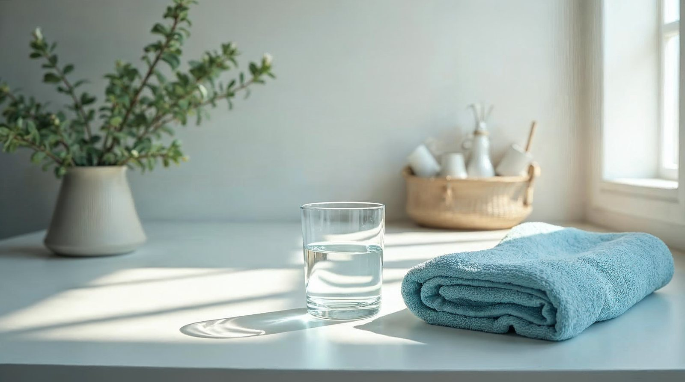
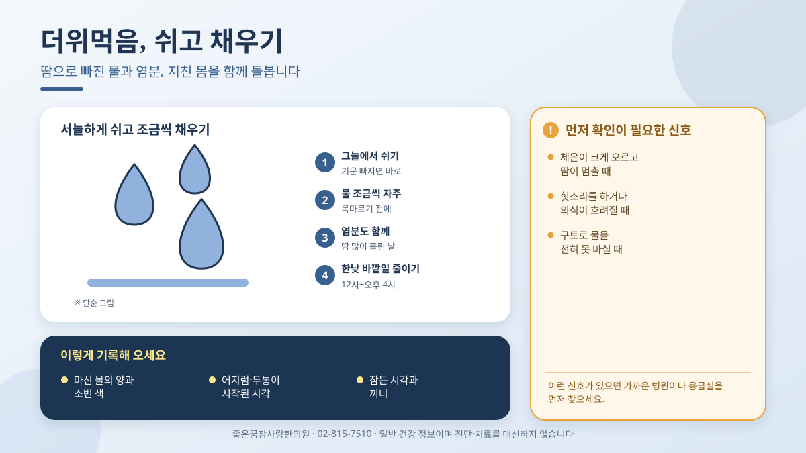

이종호 한의사 감수좋은꿈참사랑한의원 대표원장 (한의사 면허번호 19769)발행 2026-11-26 · 수정 2026-11-26
이 글의 차례
한낮에 장을 보고 돌아오는 길, 등이 땀으로 흠뻑 젖고 머리 위로 햇볕이 쏟아집니다. 집에 들어와 앉았는데 기운이 쭉 빠지고, 일어서려니 머리가 핑 돕니다. 저녁을 차려 놓아도 입맛이 없고, 몸은 나른한데 밤에는 잠도 잘 오지 않습니다.
여름마다 "더위 먹은 것 같아요"라는 말씀을 진료실에서 자주 듣습니다. 흔한 표현이지만 그 안에는 여러 불편이 함께 들어 있습니다. 기운 없음, 어지러움, 두통, 입맛 없음, 메스꺼움, 얕은 잠, 다리 무거움 같은 것들입니다.
더위먹음은 대개 쉬고 물을 채우면 하루 이틀 사이에 가라앉습니다. 그런데 여름 내내 같은 일이 되풀이되거나, 한 번 지치면 회복이 더딘 분이라면 몸이 더위를 견디는 바탕을 함께 살펴볼 필요가 있습니다. 오늘은 더위먹음이 왜 생기는지, 어떻게 쉬고 채우면 좋은지를 차근차근 정리해 보겠습니다.
더위먹음은 어떤 모습으로 나타나나요?
가장 흔한 것은 몸에 힘이 하나도 없는 느낌입니다. 계단 몇 개를 올라도 숨이 차고, 앉아 있어도 몸이 바닥으로 꺼지는 것 같다고 말씀하십니다. 머리가 띵하거나 지끈거리고, 앉았다 일어설 때 눈앞이 캄캄해지며 핑 도는 어지러움이 겹치기도 합니다.
입맛이 사라지는 것도 특징입니다. 밥 냄새가 싫어지고 시원한 것만 찾게 되며, 속이 메슥거리거나 더부룩합니다. 땀을 많이 흘린 뒤에는 종아리나 발바닥에 쥐가 나는 분도 있습니다.
밤에는 몸이 피곤한데도 쉽게 잠들지 못하고, 잠을 자도 개운하지 않습니다. 다음 날 오전부터 다시 처지니 하루가 길게 느껴집니다. 이런 날이 며칠 이어지면 기분까지 가라앉고 짜증이 늘었다고 말씀하시는 분도 계십니다.
왜 더위를 먹으면 기운이 빠지고 어지러울까요
우리 몸은 더울 때 땀을 내고 피부 쪽 혈관을 넓혀 열을 바깥으로 내보냅니다. 이 과정에서 많은 물과 염분이 땀으로 빠져나가고, 혈액은 피부 쪽으로 몰립니다. 그만큼 머리와 근육, 소화기관으로 가는 혈액은 상대적으로 줄어듭니다.
물과 염분이 충분히 채워지지 않으면 몸속을 도는 혈액의 양이 줄어 혈압이 떨어지기 쉽습니다. 앉았다 일어설 때 핑 도는 어지러움, 머리가 멍한 느낌, 쉽게 지치는 느낌이 여기서 옵니다. 근육에 필요한 염분이 모자라면 쥐가 나기도 합니다.
소화기관도 더위에 지칩니다. 혈액이 피부 쪽으로 몰리면 위와 장의 움직임이 느려지고, 입맛이 떨어지며 속이 더부룩해집니다. 여기에 찬 음료와 찬 음식을 많이 드시면 속이 더 차가워져 소화가 한층 무거워질 수 있습니다.
덥고 습한 밤에는 체온이 잘 내려가지 않아 깊은 잠에 들기 어렵습니다. 잠으로 회복하지 못한 채 다음 날 다시 더위를 맞으니, 피로가 하루하루 쌓이는 흐름이 생깁니다.
한의학에서는 여름철 땀을 많이 흘리고 기운이 빠지는 모습을 기운과 진액이 함께 소모된 상태로 설명해 왔습니다. 진찰에서 쓰는 전통적인 표현이고 따로 진단명은 아니지만, 땀으로 빠져나간 것을 채우고 쉬게 하는 일이 회복의 중심이라는 점을 잘 보여 줍니다.
일사병, 열사병과는 무엇이 다른가요?
더위로 생기는 불편은 정도에 따라 나눠 부릅니다. 흔히 말하는 더위먹음은 기운 없음, 어지러움, 두통, 메스꺼움처럼 비교적 가벼운 단계로, 서늘한 곳에서 쉬고 물과 염분을 채우면 가라앉는 경우가 많습니다. 땀을 많이 흘려 지친 일사병, 의학 용어로 열탈진이 이 범위에 가깝습니다. 하루 이틀 쉬며 지켜보는 것이 기본입니다.
열사병은 이와 다릅니다. 체온 조절 자체가 무너져 체온이 크게 오르고, 의식이 흐려지는 단계입니다. 더위먹음과는 결이 다른 상태라서, 어떤 신호가 그런 단계인지는 글 아래 '먼저 확인이 필요한' 부분에 따로 적어 두었습니다.
또 하나 헷갈리기 쉬운 것이 여름 감기와 장염입니다. 열이 나고 목이 아프거나, 설사가 하루에 여러 번 이어진다면 더위먹음보다 감염을 먼저 생각해야 합니다. 이런 경우는 내과 진료를 먼저 받아 보시길 권합니다.
더위에 더 쉽게 지치는 분들
어르신은 목마름을 늦게 느끼셔서 물을 적게 드시는 경우가 많고, 땀을 내는 힘도 젊을 때보다 약합니다. 에어컨을 아끼려고 더운 방에서 오래 지내시다 지치는 경우도 흔합니다. 가족이 자주 들여다보며 물 드시는 것을 챙겨 드리면 좋습니다.
아이는 몸집에 비해 열을 많이 만들고, 놀이에 빠지면 목마름을 잊습니다. 바깥 활동 뒤 얼굴이 유난히 붉고 처지며 입맛이 없다면 그늘에서 쉬게 하고 물을 조금씩 자주 주세요.
야외에서 일하시는 분, 주방처럼 뜨거운 곳에서 일하시는 분, 평소 땀을 많이 흘리시는 분도 더위에 쉽게 지칩니다. 잠이 부족하거나 전날 술을 드셨거나 아침을 거른 날은 같은 더위에도 훨씬 빨리 처집니다.
혈압약이나 소변을 늘리는 약, 당뇨약을 드시는 분, 심장이나 콩팥 질환으로 치료 중이신 분은 물을 얼마나 드실지도 처방한 선생님과 미리 상의해 두시는 것이 좋습니다.
먼저 이렇게 여쭙니다
처음 오시면 대략 이런 순서로 여쭙니다. 미리 떠올려 오시면 이야기가 수월해집니다.
- 기운이 빠진 것은 언제부터이고, 그날 무엇을 하셨나요?
- 하루에 물은 대략 몇 컵 드시나요? 소변 색은 어떤가요?
- 앉았다 일어설 때 어지러운가요, 가만히 있어도 어지러운가요?
- 열이 나거나 설사, 구토가 있었나요?
- 입맛은 어떻고, 끼니는 어떻게 챙기시나요?
- 잠은 몇 시간 정도 주무시고, 자주 깨시나요?
- 드시는 약이나 영양제가 있나요?
모두 정확히 기억하지 못하셔도 괜찮습니다. '오후 두 시쯤 밖에 다녀오면 꼭 처진다'처럼 흐름만 말씀해 주셔도 충분합니다.
일상에서 먼저 해 볼 수 있는 것
더위먹음은 쉬는 것과 채우는 것이 기본입니다. 거창한 방법보다 아래 몇 가지를 꾸준히 지키는 쪽이 오래갑니다.
- 기운이 빠지면 바로 서늘하고 그늘진 곳에서 눕거나 앉아 쉬기
- 목마르기 전에 물을 조금씩 자주 마시기(한 번에 많이보다 여러 번)
- 땀을 많이 흘린 날은 물과 함께 짭짤한 반찬이나 이온 음료로 염분 채우기
- 가장 더운 낮 12시~오후 4시 무렵 바깥일 줄이기
- 밖에 나갈 때는 챙 넓은 모자, 양산, 통풍 잘되는 옷 챙기기
- 끼니는 거르지 말고 소화가 쉬운 따뜻한 음식으로 조금씩 먹기
물을 드실 때 너무 찬 물을 벌컥벌컥 드시면 속이 놀라 배탈이 나기 쉽습니다. 미지근하거나 시원한 정도의 물을 몇 모금씩 나눠 드시는 것이 몸에 부담이 덜합니다. 커피와 술은 소변을 늘려 물이 더 빠질 수 있으니, 더운 날에는 양을 줄이시는 것이 좋습니다.
소변 색은 간단한 물 마시기 신호등이 됩니다. 옅은 노란색이면 대체로 괜찮고, 진한 노란색이면 물이 부족하다는 뜻일 수 있습니다. 하루 몇 번 화장실에 갈 때 한 번씩 살펴보시면 됩니다. 다만 비타민 영양제를 드시면 소변 색이 진해질 수 있으니 이 점은 감안해 주세요.
입맛이 없을 때는 억지로 한 그릇을 다 드시기보다, 죽이나 미지근한 국에 밥을 조금 말아 드시는 식으로 시작해 보세요. 오이, 토마토, 수박처럼 물기가 많은 제철 음식도 도움이 됩니다. 다만 찬 과일을 한꺼번에 많이 드시면 속이 차가워질 수 있으니 적당히 나눠 드세요.
더위를 견디는 몸을 만들려면
더위먹음을 자주 겪는 분이라면, 여름이 오기 전부터 몸을 조금씩 더위에 익숙하게 만드는 것이 도움이 됩니다. 초여름부터 이른 아침이나 저녁의 선선한 시간에 가볍게 걸으며 땀을 내는 연습을 하면, 몸이 땀을 내고 식히는 일에 서서히 적응합니다.
잠은 더위를 견디는 바탕입니다. 잠드는 방은 너무 덥지 않게 하고, 자기 전 미지근한 물로 샤워해 몸의 열을 내려 주세요. 잠이 부족한 날은 낮에 무리한 바깥일을 줄이고, 짧게라도 눈을 붙이는 시간을 만드시길 권합니다. 낮잠은 20~30분 안쪽으로 짧게 자야 밤잠을 방해하지 않습니다.
근육은 몸이 물을 저장하는 창고이기도 합니다. 근육이 너무 적으면 같은 더위에도 쉽게 지칠 수 있어서, 의자에서 천천히 일어났다 앉기처럼 부담 없는 근력 운동을 꾸준히 해 두시면 여름을 나는 데 도움이 됩니다.

더운 곳에서 일해야 하는 날에는
바깥일이나 뜨거운 주방 일처럼 더위를 피할 수 없는 날도 있습니다. 이런 날은 일을 시작하기 전에 물을 한두 컵 먼저 드시고, 일하는 동안에는 15~20분마다 몇 모금씩 마시는 식으로 시간을 정해 두시면 좋습니다. 목이 마를 때는 이미 물이 꽤 빠져나간 뒤인 경우가 많습니다.
한 시간에 한 번은 그늘이나 서늘한 곳에서 잠깐 쉬어 주세요. 쉬는 동안 목덜미와 손목, 이마를 젖은 수건으로 닦아 주면 몸의 열을 내리는 데 도움이 됩니다. 땀에 젖은 옷은 갈아입을 수 있으면 갈아입는 것이 좋습니다.
혼자 일하기보다 동료와 서로의 얼굴빛과 말투를 살펴 주시는 것도 중요합니다. 더위에 지친 사람은 본인이 먼저 알아차리지 못하는 경우가 많습니다. 평소보다 말수가 줄고 얼굴이 창백하거나 붉어지면, 일을 잠시 멈추고 함께 쉬어 가세요.
일을 마친 뒤에는 바로 차가운 맥주나 찬 음료로 몸을 식히기보다, 미지근한 물로 샤워하고 따뜻한 국과 밥으로 저녁을 드시는 편이 다음 날 회복에 더 도움이 됩니다.
한의원에서 함께 살필 수 있는 경우
- 여름마다 쉽게 지치고 기운이 빠져 일상이 힘든 경우
- 땀을 많이 흘린 뒤 어지럽고 머리가 무거운 날이 잦은 경우
- 더위에 입맛이 사라지고 속이 더부룩한 날이 이어지는 경우
- 더위가 지나가도 피로와 얕은 잠이 오래 남는 경우
- 조금만 움직여도 땀이 많이 나고 그 뒤에 처지는 경우
좋은꿈참사랑한의원에 오시면 먼저 아래 '먼저 확인이 필요한' 신호가 없는지부터 봅니다. 그다음 맥을 짚고, 혀와 손발의 상태, 땀의 양과 잠, 소화, 대소변을 여쭙습니다. 필요하다고 판단되면 인바디로 체수분과 근육량을 살펴보기도 합니다.
진찰 내용을 바탕으로 생활에서 바꿔 볼 것 하나와 함께 침, 한약 상담 가운데 지금 상태에 맞는 것을 정합니다. 한약을 상의할 때는 드시는 약을 모두 확인하고 신중하게 정하며, 임신 중이시거나 가능성이 있다면 먼저 알려 주세요. 산부인과 선생님과 상의하는 것이 우선입니다.
어지럼이 자주 반복되거나 더위와 상관없이 이어진다면 빈혈, 혈압, 혈당, 갑상선 같은 다른 원인이 없는지 내과 검사를 함께 받아 보시길 권합니다. 한의원 진료는 그 검사와 나란히 몸의 회복을 함께 살피는 쪽으로 갑니다.
이렇게 기록해 오시면 상담이 쉬워집니다
일주일 정도 간단히 적어 보시면 몸이 언제 지치는지 흐름이 보입니다.
- 바깥에 있었던 시간과 그날의 날씨(대략의 기온)
- 하루 동안 마신 물의 양과 소변 색
- 기운 빠짐, 어지러움, 두통이 시작된 시각
- 끼니를 어떻게 드셨는지, 입맛은 어땠는지
- 잠든 시각과 깬 시각, 밤에 깬 횟수
- 드신 약, 커피와 술의 양
기록을 나란히 놓고 보면 물이 적었던 날, 잠이 짧았던 날, 바깥일이 길었던 날에 몸이 처지는 연결이 보이기 시작합니다. 그 연결이 다음 걸음을 정하는 실마리가 됩니다.
여름을 무사히 건너기 위해
더위먹음은 몸이 더위를 버티느라 애쓴 흔적입니다. 약한 사람만 겪는 일이 아니라, 누구든 물과 쉼이 부족하면 찾아올 수 있습니다.
이번 주에는 물을 한 컵씩 더 나눠 마시기, 가장 더운 시간 바깥일 피하기, 따뜻한 국으로 한 끼 챙기기 가운데 하나만 골라 보세요. 작은 습관 하나가 여름 오후를 버티는 힘이 될 수 있습니다.
여름이 끝나 갈 무렵에도 몸이 예전 같지 않다면, 지난 여름을 어떻게 보냈는지 기록과 함께 돌아보는 시간을 가져 보세요. 다음에 오시면 그 기록을 함께 펼쳐 보며, 내년 여름을 조금 덜 지치게 보낼 방법을 같이 찾아보겠습니다.
이런 증상은 먼저 확인이 필요합니다
- 체온이 크게 오르고 땀이 멈추며 헛소리를 하거나 의식이 흐려지는 경우
- 구토가 계속되어 물을 전혀 마시지 못하거나 쓰러진 뒤 깨어나기 어려운 경우
이런 신호가 있으면 한의원보다 가까운 병원이나 응급실을 먼저 찾으세요.
함께 읽으면 좋은 글
- 앉았다 일어설 때 어지러운 것은 어떤 점을 살펴보나요?
- 충분히 쉬어도 몸이 늘 피곤한 만성피로는 어떤 점을 살펴보나요?
- 밤마다 종아리에 쥐가 나서 깨는 근육 경련은 왜 생기고 무엇을 살피나요?
- 어르신이 기운이 없고 자꾸 눕고만 싶어 하실 때는 무엇을 살피나요?
- 찬 음식이나 찬 음료를 먹으면 배가 아플 때는 어떻게 하나요?

여쭙는 것
- 기운이 빠진 것은 언제부터이고, 그날 무엇을 하셨나요?
- 하루에 물은 대략 몇 컵 드시나요? 소변 색은 어떤가요?
- 앉았다 일어설 때 어지러운가요, 가만히 있어도 어지러운가요?
생활에서 해 볼 것
- 기운이 빠지면 바로 서늘하고 그늘진 곳에서 눕거나 앉아 쉬기
- 목마르기 전에 물을 조금씩 자주 마시기(한 번에 많이보다 여러 번)
- 땀을 많이 흘린 날은 물과 함께 짭짤한 반찬이나 이온 음료로 염분 채우기
한의원에서 함께 살필 것
- 여름마다 쉽게 지치고 기운이 빠져 일상이 힘든 경우
- 땀을 많이 흘린 뒤 어지럽고 머리가 무거운 날이 잦은 경우
- 더위에 입맛이 사라지고 속이 더부룩한 날이 이어지는 경우
먼저 확인이 필요한 신호
- 체온이 크게 오르고 땀이 멈추며 헛소리를 하거나 의식이 흐려지는 경우
- 구토가 계속되어 물을 전혀 마시지 못하거나 쓰러진 뒤 깨어나기 어려운 경우
한눈에 보는 표
| 구분 | 핵심 |
|---|---|
| 여쭙는 것 | 기운이 빠진 것은 언제부터이고, 그날 무엇을 하셨나요? 하루에 물은 대략 몇 컵 드시나요? 소변 색은 어떤가요? |
| 생활에서 해 볼 것 | 기운이 빠지면 바로 서늘하고 그늘진 곳에서 눕거나 앉아 쉬기 목마르기 전에 물을 조금씩 자주 마시기(한 번에 많이보다 여러 번) |
| 한의원에서 함께 살필 것 | 여름마다 쉽게 지치고 기운이 빠져 일상이 힘든 경우 땀을 많이 흘린 뒤 어지럽고 머리가 무거운 날이 잦은 경우 |
| 먼저 확인이 필요한 신호 | 체온이 크게 오르고 땀이 멈추며 헛소리를 하거나 의식이 흐려지는 경우 구토가 계속되어 물을 전혀 마시지 못하거나 쓰러진 뒤 깨어나기 어려운 경우 |
자주 묻는 질문
더위를 먹었을 때 이온 음료를 마셔도 되나요?
땀을 많이 흘린 날에는 물과 함께 염분을 채우는 데 도움이 될 수 있습니다. 다만 당분이 들어 있어서 당뇨가 있으시면 양을 조절하시고, 콩팥이나 심장 질환으로 치료 중이시면 처방한 선생님과 먼저 상의해 주세요.
입맛이 없는데 억지로라도 먹어야 하나요?
한 번에 많이 드시기보다 소화가 쉬운 음식을 조금씩 자주 드시는 것을 권합니다. 죽이나 미지근한 국처럼 부담이 적은 것부터 시작해 보세요.
더위먹음은 며칠이면 회복되나요?
대개는 서늘한 곳에서 쉬고 물과 염분을 채우면 하루 이틀 사이에 가라앉는 경우가 많습니다. 며칠이 지나도 처짐과 어지럼이 이어진다면 다른 원인이 없는지 진료를 받아 보세요.
여름에 보약을 먹어야 하나요?
모든 분께 필요한 것은 아닙니다. 진찰을 해 보고 지금 상태에 맞는지 먼저 살핀 뒤, 드시는 약을 확인하고 신중하게 상의해서 정합니다.
어르신이 더위를 잘 안 느끼신다고 하시는데 괜찮을까요?
어르신은 더위와 목마름을 늦게 느끼시는 경우가 많습니다. 실내 온도와 물 드시는 양을 가족이 함께 챙겨 드리고, 처지거나 입맛이 줄면 일찍 살펴보시는 것이 좋습니다.
좋은꿈참사랑한의원은 재진 때 지난번 이야기부터 이어서 여쭙니다. 진료시간과 예약은 오시는 길에서 확인하세요.
어디서 상담받을 수 있나요?
좋은꿈참사랑한의원은 서울 동작구 만양로2길 2 신성빌딩 3층·5층(서울 동작구 상도동, 7호선 상도역 3번 출구 근처)에 있습니다. 한의사 3명(이종호 대표원장, 조영기 수석진료원장, 정원영 진료원장)이 진료합니다. 진료시간은 평일 09:30~20:00(점심 13:00~14:00), 토·일·공휴일 09:30~15:00이며, 방문 전 전화로 확인을 권합니다. 예약은 네이버 예약, 카카오톡 상담, 전화 02-815-7510로 받습니다.
이 글은 일반적인 건강 정보이며 개인의 진단이나 치료를 대신하지 않습니다. 증상이 있거나 복용 중인 약이 있다면 진료를 통해 확인하세요. 치료 효과는 개인마다 다를 수 있습니다.
작성 기준: 일반적으로 알려져 있는 건강 정보를 참고해 정리했습니다(대표원장 감수). 증상 기록은 1~2주 동안 하루 1회, 비슷한 시간에 적어 오시면 지난 상태와 비교하기 쉽습니다.